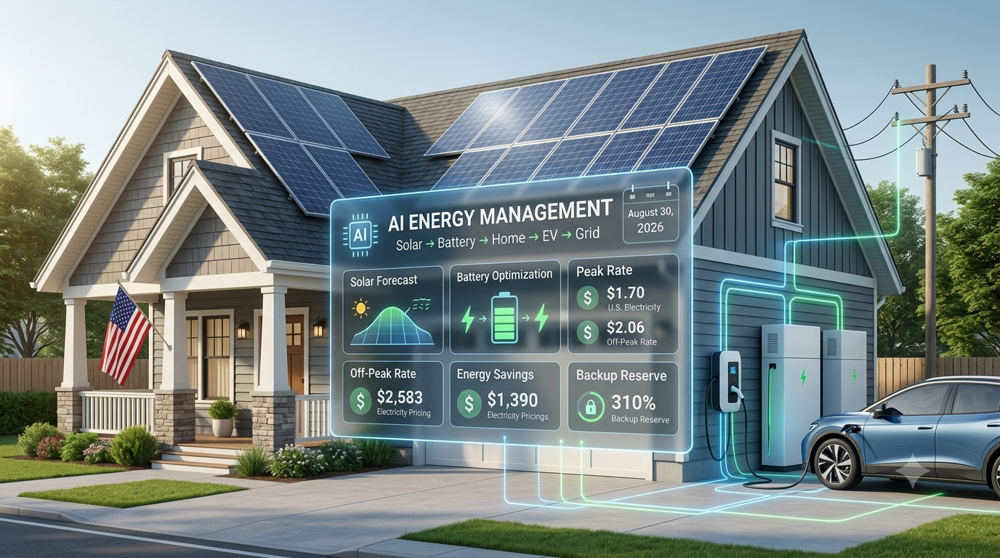

AI Energy Management: How Smart Tech Optimizes Your Solar & Battery Savings in 2026
Updated August 30, 2026 · U.S. solar and home-energy guide

Solar panels are no longer the only smart part of a modern home energy system. In 2026, artificial intelligence and advanced energy-management software can help homeowners decide when to use solar power, when to charge a home battery, when to discharge stored energy, when to charge an EV and when grid electricity may be more expensive.
For U.S. homeowners, this means a solar-plus-battery system can do more than simply produce and store electricity. Intelligent software can analyze solar production, household consumption, weather forecasts, battery status and utility electricity rates to create a more efficient operating plan.
What Is AI Energy Management?
AI energy management is the use of software, forecasting, data analysis and automated controls to make better decisions about how a home produces, stores and consumes electricity.
A basic solar system follows a relatively simple pattern: solar power serves the home, excess electricity charges the battery or goes to the grid. An intelligent system can make that process dynamic by forecasting production, predicting demand, checking electricity prices and optimizing battery operation.
How AI Works With Solar Panels
Solar production changes throughout the day. Clouds, storms, temperature, season and shading can all affect output. AI-based forecasting can combine historical system performance with weather information to estimate future solar production.
If tomorrow is expected to be cloudy, software may preserve more battery energy for later use. If strong sunshine is expected, the system may have more flexibility to use stored energy before the solar production period begins.
AI Battery Optimization: A Major Savings Opportunity
For many homeowners, the battery is where intelligent energy management can make the biggest difference. A battery does not always need to charge or discharge at maximum capacity. Its value depends on when electricity is generated, consumed, stored and purchased from the grid.
During the day, excess solar can charge the battery after household loads are served. During expensive evening periods, stored energy can help reduce electricity purchased from the grid.
Some current home-energy platforms can use forecasts and utility rates to automate these decisions. The exact behavior depends on the equipment and utility program.
AI and Time-of-Use Electricity Rates
Time-of-use, or TOU, pricing makes intelligent battery control especially useful. Electricity can cost different amounts at different times of the day.
A smart system can potentially charge a battery when energy is cheaper or when excess solar is available, then preserve that energy for periods when electricity is more expensive.
For a homeowner with solar, battery storage and a TOU plan, the objective is not simply to maximize battery cycling. It is to use stored energy when it provides the most value while maintaining an appropriate backup reserve.
AI Can Predict Household Energy Demand
Solar forecasting is only one side of the equation. Energy-management software can also learn patterns in household electricity consumption.
A home may regularly use more electricity in the evening, during hot weather, when air conditioning is running or when an EV is charging. Understanding these patterns can help the system prepare the battery and other controllable loads before demand increases.
AI and Smart Home Appliances
As more household devices become connected, energy-management systems can coordinate more than solar and batteries. Depending on the equipment, this can include EV chargers, heat pumps, water heaters, HVAC systems and selected smart appliances.
The bigger idea is to optimize the home as a complete energy system instead of managing every device separately.
AI Energy Management and EV Charging
Electric vehicles can become one of the largest electricity loads in a home. Charging immediately after arriving home is not always the most economical option.
If an EV arrives at 5 PM and does not need to leave until the next morning, smart software may have several hours to choose a more favorable charging period based on solar production, electricity rates and the required departure time.
AI for Solar Battery Backup
Energy savings are not the only reason to use smart battery management. Backup power is another important benefit.
On a normal day, a homeowner may want to use more battery capacity to reduce grid purchases. When severe weather threatens, preserving battery capacity for a potential outage can become more important.
Modern energy platforms can provide storm-related or backup-oriented controls, although the exact features vary by battery manufacturer, location and software ecosystem.
AI and Virtual Power Plants
A virtual power plant, or VPP, connects distributed energy resources such as home batteries so they can respond collectively to grid needs.
Depending on the utility and state, homeowners may be able to enroll eligible batteries in demand-response or VPP programs. A participating battery can sometimes provide grid services in exchange for compensation or other program benefits.
Availability and payment vary by location, so homeowners should check the exact program terms before enrolling.
AI Can Help Manage Excess Solar
Solar generation can sometimes exceed immediate household demand. The best use of excess electricity depends on the home's export compensation and utility rules.
A smart system may prioritize household consumption, battery charging, EV charging or grid export based on the economics and settings of the system.
This can be especially useful where exported solar is compensated at a lower value than electricity purchased from the grid.
Why AI Energy Management Matters in the U.S.
The United States has a wide variety of electricity markets, utility tariffs and solar policies. A strategy that works well for one homeowner may not work as well for another.
California, for example, has experienced periods of high renewable generation and increasing interest in storage. At the household level, batteries can shift solar electricity from sunny hours toward periods when the home needs more power.
This makes intelligent scheduling more valuable as the number of solar-plus-storage homes grows.
How Much Money Can AI Energy Management Save?
There is no universal dollar amount or guaranteed percentage of savings.
Potential savings depend on:
- Utility electricity rates
- Time-of-use pricing
- Net-metering or export compensation rules
- Solar system size
- Battery capacity and efficiency
- Household electricity consumption
- EV charging needs
- Weather and solar production
- Backup reserve settings
- Available utility programs
The important question is not “How much does AI save everyone?” but rather “How much value can smart optimization add to my specific solar-plus-battery system?”
Does AI Increase Battery Wear?
More battery cycling can increase battery throughput and may contribute to degradation over time. That means an optimization system should not simply maximize battery activity.
A well-designed strategy balances electricity savings, battery health, backup protection and grid requirements. The cheapest short-term electricity schedule is not necessarily the best long-term battery strategy.
AI vs. Traditional Solar Monitoring
Traditional solar monitoring mainly tells homeowners what happened: how much solar was produced, how much energy was consumed, how much the battery holds and how much electricity was imported or exported.
AI energy management aims to go further by using those data points to make decisions about what should happen next.
Monitoring: “Your solar system produced 28 kWh today.”
Optimization: “Tomorrow's production is expected to be lower, so preserve additional battery energy for the evening.”
What Should Homeowners Look For?
When comparing an AI-enabled solar-plus-battery system, do not choose it simply because the manufacturer uses the word “AI.” Ask what the software actually controls and what data it uses.
- Real-time or current electricity rates
- TOU rate schedules
- Weather and solar forecasts
- Historical household consumption
- Battery state of charge
- EV charging schedules
- Backup reserve controls
- Export limits and utility rules
- Demand-response or VPP participation
- Compatibility with your inverter, battery and EV charger
Is AI Energy Management Worth It in 2026?
For homeowners with solar panels and battery storage, AI energy management is becoming an increasingly useful tool. It can coordinate several variables that are difficult to manage manually: solar production, electricity prices, battery storage, household demand, EV charging, weather and backup needs.
The biggest benefit is not necessarily that AI makes solar panels produce more electricity. Instead, it can help homeowners use the electricity they already produce more intelligently.
Final Takeaway
AI energy management in 2026 is turning solar-plus-battery systems into smarter home energy networks. Modern software can analyze production, demand, weather and electricity prices to automate decisions about battery charging, battery discharge, solar usage, EV charging and backup power.
For U.S. homeowners, the technology can be especially useful when a home has solar panels, battery storage, time-of-use pricing, an EV, significant evening consumption or variable solar-export compensation.
But AI is not magic. The actual financial benefit depends on the home's equipment, utility rate, location, energy use and available programs. The smartest approach is to compare the complete solar-plus-battery system and evaluate whether its energy-management software can optimize the specific needs of your home.
← Back to SolarRateHub